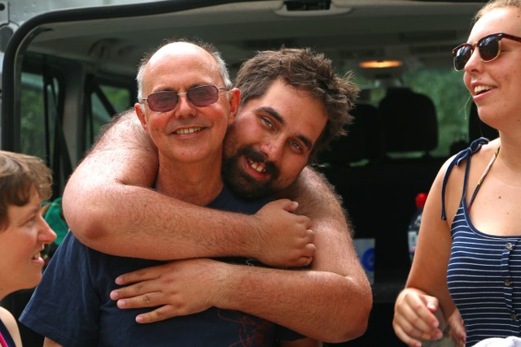

John Ryde
John Ryde has been married for over 40 years and lives in rural Dorset. He has two grown up daughters and, in the last two years, 3 grandchildren. The grandchildren keep him fairly busy! For most of his life he was a secondary school science teacher and in recent years has really enjoyed working for Able2Achieve, a company that runs supported living placements and day provision for adults with learning disabilities and autism. John has organised and run numerous residential trips as a teacher and youth leader. John and his wife spent 6 years working with refugees and other disadvantaged people in northern Thailand, close to the Burma border. As part of their role in Thailand they helped to facilitate visiting teams. John has spent part of the last 4 summers with Go Beyond in France and Italy.
John is also a Governor in a special school in Dorset. He is the link Governor for Safeguarding and the sixth form. He spends time in school as a volunteer in the sixth form most weeks. He has received recent training through Able2Achieve and Governor Services in safeguarding both for children and adults, medicines administration, first aid at work, the mental capacity act, epilepsy, autism and therapeutic behaviour management.
A Few Questions to John Ryde
What motivates and inspires you?
Seeing people, especially disadvantaged people, achieve their potential – going beyond what they thought was possible. I also love travelling to new parts of the world and getting to know their culture and food.
What are your strengths?
Years of life experience and finding myself in slightly stressful situations have taught me to stay calm and find a good way through anything. This is backed up by a practical/technical ability born of years of having to make do and mend mechanical and electrical things due to lack of money! As for people, I nearly always see their positives and enjoy working with them. I find this an amazing privilege. In recent years I have learned a tremendous amount about behaviour and how to manage it positively. I wish I had known what I now know when I was a Teacher!
What about your weaknesses, where do you need support?
I still think I’m in my thirties and not nearly 65, so I don’t always know when to slow down or rest. I normally wake early and on a GP holiday there is normally at least one early riser, so my day starts early. By the evening I am likely to fall asleep where I sit. Falling asleep in the evenings is certainly something that my wife would complain about.
What is the highlight of working for Go Beyond Holidays?
I love being a part of the Go Beyond family. There is a real sense that everyone, staff and guests, are welcomed into the group as a highly valued member. It is an amazing privilege to see guests overcome fears, grow in confidence and make new friends.
Do you have any personal ambitions?
To become a better musician. I really need to spend a lot more time practicing. I do enjoy performing, but could do with being a lot more professional. I would also love to get a glider pilots licence.
Finally, if you were set adrift on a desert island which three albums, three films, three books and one luxury would you take?
For music, I would have to take a Beatles album, probably the White Album, something classical like Handel’s Messiah and Tapestry by Carole King. My books would be Skallagrigg by Richard Horwood, I shall not hate by Izzeldin Abuelaish and a devotional book such as The Ignatian Adventure by Kevin O’Brien SJ. I’m not much of a film buff, but I would take The Book Thief, La Huiteme Jour and for pure escapism (and seeing someone sing worse than me) Mama Mia. As a luxury item I would take a guitar. I may even find the time to practice and become competent!
Meet the rest of the team...A short video from John Ryde
Go Beyond Holidays is an independent agent for 360 Private Travel. All flights and flight-inclusive holidays on this website are financially protected by the ATOL scheme.
Phone number 00 44 7904 878365
E-mail: info@gobeyondholidays.com

Registered Name & Address:
360 Private Travel Limited, 54 High Street, Sevenoaks, TN13 1JG, United Kingdom,
Registration Number: 8512928. Registered in England & Wales
VAT Number: 163818688 ATOL 7514 IATA 91-2 0005 6 Virtuoso Member Number 3251
An independent affiliate of

360 Private Travel is a member of Virtuoso, allowing Go Beyond Holidays access to preferential rates and exclusive benefits at some of the finest hotels around the world.
For Your Financial Protection